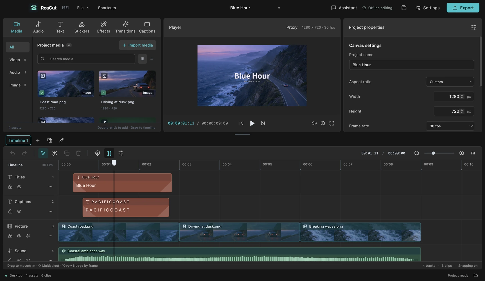
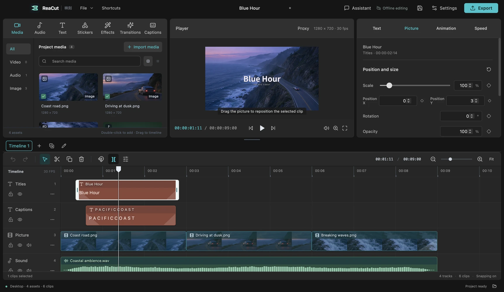
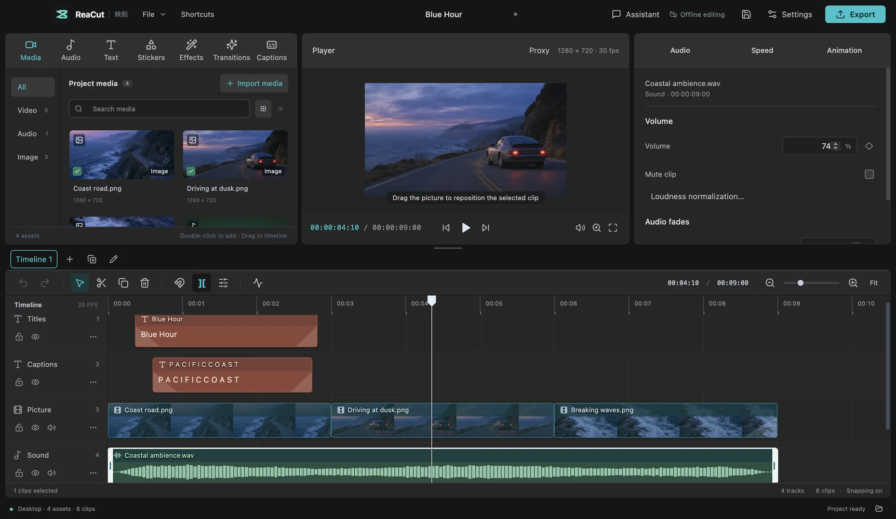

关键帧与变速
用曲线控制位移、缩放和透明度。可以渐变速度，也可以倒放或定格。

免费开源
剪视频、加字幕、调声音。macOS 和 Windows 均支持本地剪辑和导出。
Apple Silicon v0.9.0 Windows 10/11 x64 v0.9.1 查看剪辑 Agent
在搭载 Apple 芯片的 Mac 上，ReaCut 在本机识别语音，Codex 翻译文字，字幕按原有时间写入可编辑的时间线。

给这个视频加英文字幕
打开《蓝调时刻》工程，看看时间线、字幕和声音面板。

标记素材的入点和出点，修剪和分割片段。同一工程可建多条时间线。

导入 SRT、批量编辑字幕，或配置 MLX Whisper 后在本机识别字幕。

统一片段响度，让背景音乐随人声自动降低，也可以检测节拍并按拍点剪辑。
用曲线控制位移、缩放和透明度。可以渐变速度，也可以倒放或定格。
把剪好的工程保存为带有素材和文字占位的模板。批量换素材，每一版都能保存为独立工程。

用轻量代理预览高分辨率素材。导出整条时间线或选定区间，支持 MP4 和 MOV。
选择适合你电脑的预览版。
macOS Apple 芯片 v0.9.0 · Windows 10/11 x64 v0.9.1（安装包未签名）。
打开 DMG 后，把 ReaCut 拖到「应用程序」。预览版采用临时签名，尚未经过 Apple 公证。如果 macOS 提示无法验证开发者，请先核对下载文件的 SHA-256，再参考 Apple 的说明。 安装说明
下载适用于 Windows 10/11 x64 的 EXE。安装包未签名，请先核对 SHA-256 再运行。此预览版不包含本地 MLX 转录、macOS 系统语音或 Codex 插件。 Windows 版本说明
可以。导入、编辑、保存和导出都在本机运行，无需账号。自动识别字幕需要先配置 MLX Whisper 和本地模型。 本地语音指南
可以从受支持的本地剪映草稿导入基础剪辑。这个功能仍在实验阶段，部分文字样式、效果和关键帧可能丢失。 查看兼容范围